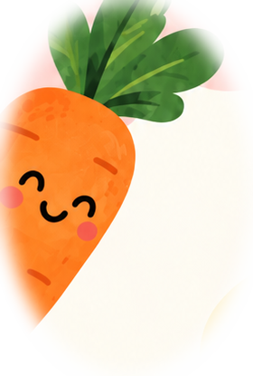
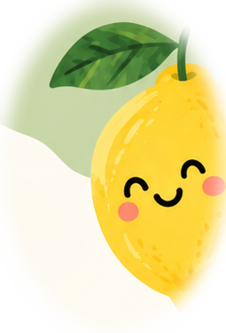
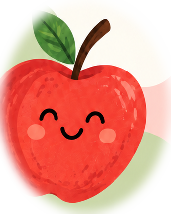
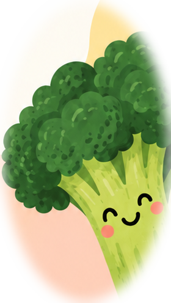
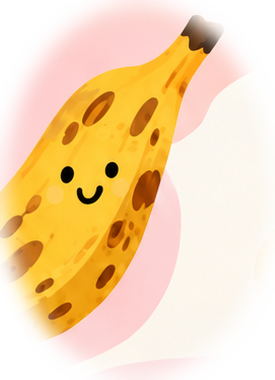
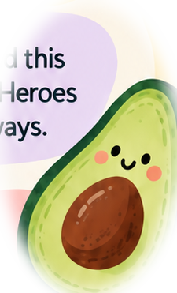

Teaser posters featuring fruits with visible 'symptoms' paired with 'rotten excuses' (quotes)




WELCOME TOFRUITFULCONVERSATIONS
We're here to talk about men's health - but men and women are welcome to participate.
Find out below how we applied the SMD framework to this mini campaign.
01 / THE INSIGHT
THE MOMENT
When we look okay or feel 'fine-ish', we tend to assume it's nothing bad or serious. Same goes to how we choose fruits, we can't tell which fruit tastes better based on looks alone, and we even think it's okay to consume fruits or vegetables even when they look shady.
02 / THE OPPORTUNITY
THE TOUCHPOINTS
What if we can turn produce shopping into a health conversation, since people, especially men, rarely consider checkups until it's too late - or shall we say, till the moment is too ripe?


03 / THE EXECUTION
THE DESIGN
Tap each card to read more.
Pasar Pagi, a pop-up event where people can pick up fresh fruits & veggies to take home, while discovering health info woven throughout the market experience, to make it a fruitful experience.
Psychological drama of SKS: To make them realise that seeing is not enough, we need to feel, smell, ask about it in order to discover whether something is healthy or not, and to make them realise that they cannot take these decisions lightly, otherwise they have to pay a higher cost in the long run.
Monetise: To show clients how we designed this initiative to bring health awareness to KD Heroes and we can do the same for them in other ways.